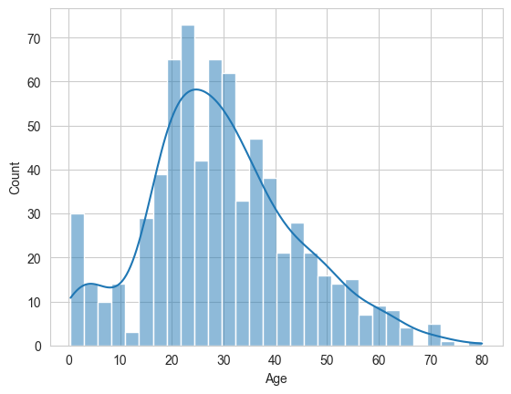
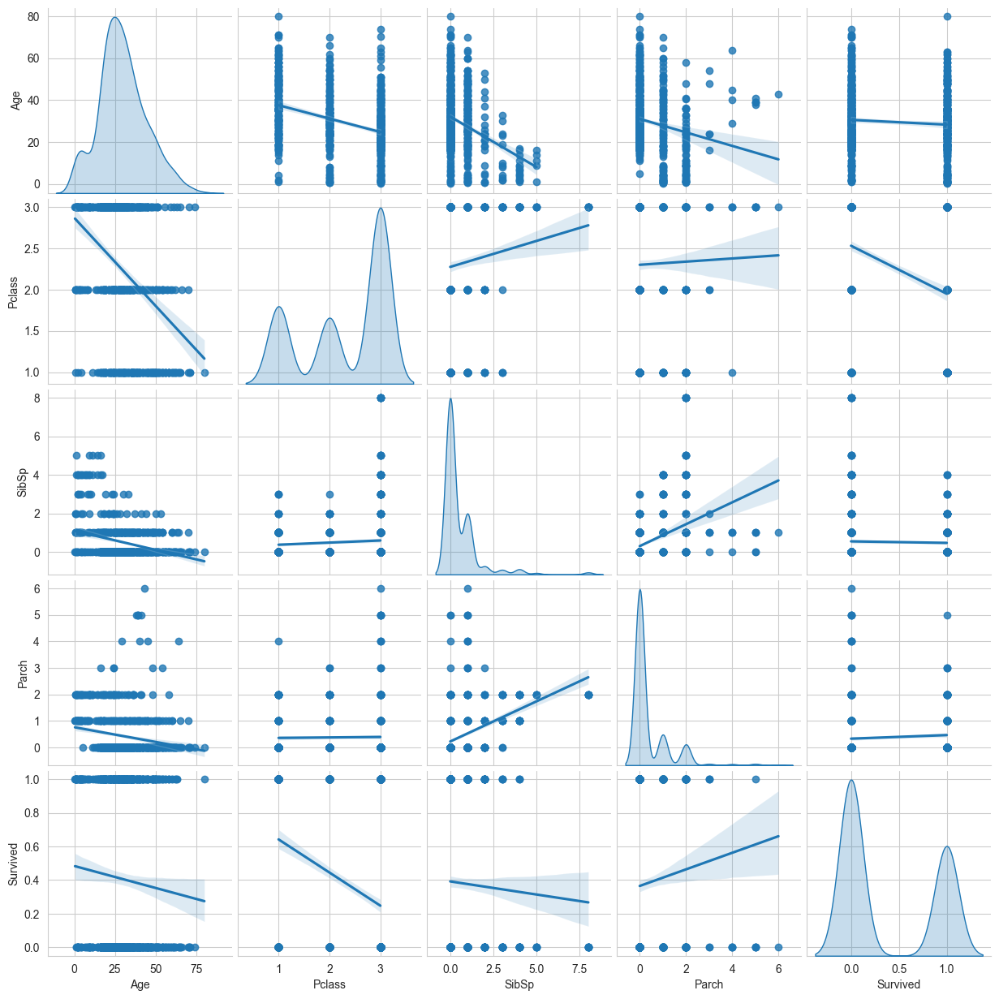
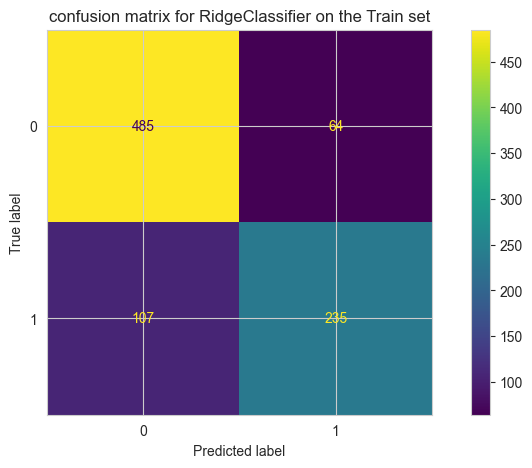

import pandas as pd
import matplotlib.pyplot as plt
import seaborn as sns
---------------------------------------------------------------------------
ModuleNotFoundError Traceback (most recent call last)
Cell In[1], line 1
----> 1 import pandas as pd
2 import matplotlib.pyplot as plt
3 import seaborn as sns
ModuleNotFoundError: No module named 'pandas'
train_data = pd.read_csv('data/train.csv', index_col='PassengerId')
train_data.info()
<class 'pandas.core.frame.DataFrame'>
Index: 891 entries, 1 to 891
Data columns (total 11 columns):
# Column Non-Null Count Dtype
--- ------ -------------- -----
0 Survived 891 non-null int64
1 Pclass 891 non-null int64
2 Name 891 non-null object
3 Sex 891 non-null object
4 Age 714 non-null float64
5 SibSp 891 non-null int64
6 Parch 891 non-null int64
7 Ticket 891 non-null object
8 Fare 891 non-null float64
9 Cabin 204 non-null object
10 Embarked 889 non-null object
dtypes: float64(2), int64(4), object(5)
memory usage: 83.5+ KB
train_data[['Pclass','Sex','Age','SibSp','Parch', 'Cabin','Embarked']].describe(include='all')
| Pclass | Sex | Age | SibSp | Parch | Cabin | Embarked | |
|---|---|---|---|---|---|---|---|
| count | 891.000000 | 891 | 714.000000 | 891.000000 | 891.000000 | 204 | 889 |
| unique | NaN | 2 | NaN | NaN | NaN | 147 | 3 |
| top | NaN | male | NaN | NaN | NaN | G6 | S |
| freq | NaN | 577 | NaN | NaN | NaN | 4 | 644 |
| mean | 2.308642 | NaN | 29.699118 | 0.523008 | 0.381594 | NaN | NaN |
| std | 0.836071 | NaN | 14.526497 | 1.102743 | 0.806057 | NaN | NaN |
| min | 1.000000 | NaN | 0.420000 | 0.000000 | 0.000000 | NaN | NaN |
| 25% | 2.000000 | NaN | 20.125000 | 0.000000 | 0.000000 | NaN | NaN |
| 50% | 3.000000 | NaN | 28.000000 | 0.000000 | 0.000000 | NaN | NaN |
| 75% | 3.000000 | NaN | 38.000000 | 1.000000 | 0.000000 | NaN | NaN |
| max | 3.000000 | NaN | 80.000000 | 8.000000 | 6.000000 | NaN | NaN |
train_data.isnull().sum()
Survived 0
Pclass 0
Name 0
Sex 0
Age 177
SibSp 0
Parch 0
Ticket 0
Fare 0
Cabin 687
Embarked 2
dtype: int64
feature_names = ['Age', 'Pclass','Sex','SibSp','Parch', 'Embarked']
X_train = train_data[feature_names]
y_train = train_data['Survived']
X_train
| Age | Pclass | Sex | SibSp | Parch | Embarked | |
|---|---|---|---|---|---|---|
| PassengerId | ||||||
| 1 | 22.0 | 3 | male | 1 | 0 | S |
| 2 | 38.0 | 1 | female | 1 | 0 | C |
| 3 | 26.0 | 3 | female | 0 | 0 | S |
| 4 | 35.0 | 1 | female | 1 | 0 | S |
| 5 | 35.0 | 3 | male | 0 | 0 | S |
| ... | ... | ... | ... | ... | ... | ... |
| 887 | 27.0 | 2 | male | 0 | 0 | S |
| 888 | 19.0 | 1 | female | 0 | 0 | S |
| 889 | NaN | 3 | female | 1 | 2 | S |
| 890 | 26.0 | 1 | male | 0 | 0 | C |
| 891 | 32.0 | 3 | male | 0 | 0 | Q |
891 rows × 6 columns
sns.histplot(X_train['Age'], bins=30, kde=True)
X_train['Age'].describe()
count 714.000000
mean 29.699118
std 14.526497
min 0.420000
25% 20.125000
50% 28.000000
75% 38.000000
max 80.000000
Name: Age, dtype: float64

X_train.loc[:, 'Age']= X_train['Age'].fillna(X_train['Age'].median()).astype(int)
X_train.loc[:, 'Embarked'] = X_train['Embarked'].fillna(X_train['Embarked'].mode()[0])
loc避免在切片上面操作
X_train.isnull().sum()
Age 0
Pclass 0
Sex 0
SibSp 0
Parch 0
Embarked 0
dtype: int64
1. pairplot#
sns.pairplot(train_data[['Age', 'Pclass','Sex','SibSp','Parch', 'Embarked','Survived']],
kind='reg',
diag_kind='kde'
)
<seaborn.axisgrid.PairGrid at 0x1723e8dd940>

📈
❓feature and target distribution.?
Appearently, there are no linear realtionship between any features.
2. preprocessor#
train_data.info()
<class 'pandas.core.frame.DataFrame'>
Index: 891 entries, 1 to 891
Data columns (total 11 columns):
# Column Non-Null Count Dtype
--- ------ -------------- -----
0 Survived 891 non-null int64
1 Pclass 891 non-null int64
2 Name 891 non-null object
3 Sex 891 non-null object
4 Age 714 non-null float64
5 SibSp 891 non-null int64
6 Parch 891 non-null int64
7 Ticket 891 non-null object
8 Fare 891 non-null float64
9 Cabin 204 non-null object
10 Embarked 889 non-null object
dtypes: float64(2), int64(4), object(5)
memory usage: 83.5+ KB
from sklearn.compose import make_column_transformer
from sklearn.preprocessing import OneHotEncoder
from sklearn.preprocessing import StandardScaler
categorical_columns = ['Pclass','Sex','SibSp','Parch', 'Embarked']
numerical_columns = ['Age']
preprocessor = make_column_transformer(
# handle_unknown='ignore' test出现 train一分类中没见过的值，标记0，
(OneHotEncoder(handle_unknown='ignore'), categorical_columns),
(StandardScaler(), numerical_columns),
remainder='passthrough',
verbose_feature_names_out=False
)
from sklearn.linear_model import RidgeClassifier
from sklearn.pipeline import make_pipeline
model = make_pipeline(
preprocessor,
RidgeClassifier(tol=1e-2, solver="auto")
)
3. process, metics#
model.fit(X_train,y_train)
Pipeline(steps=[('columntransformer',
ColumnTransformer(remainder='passthrough',
transformers=[('onehotencoder',
OneHotEncoder(handle_unknown='ignore'),
['Pclass', 'Sex', 'SibSp',
'Parch', 'Embarked']),
('standardscaler',
StandardScaler(), ['Age'])],
verbose_feature_names_out=False)),
('ridgeclassifier', RidgeClassifier(tol=0.01))])In a Jupyter environment, please rerun this cell to show the HTML representation or trust the notebook. On GitHub, the HTML representation is unable to render, please try loading this page with nbviewer.org.
Parameters
| steps | [('columntransformer', ...), ('ridgeclassifier', ...)] | |
| transform_input | None | |
| memory | None | |
| verbose | False |
Parameters
| transformers | [('onehotencoder', ...), ('standardscaler', ...)] | |
| remainder | 'passthrough' | |
| sparse_threshold | 0.3 | |
| n_jobs | None | |
| transformer_weights | None | |
| verbose | False | |
| verbose_feature_names_out | False | |
| force_int_remainder_cols | 'deprecated' |
['Pclass', 'Sex', 'SibSp', 'Parch', 'Embarked']
Parameters
| categories | 'auto' | |
| drop | None | |
| sparse_output | True | |
| dtype | <class 'numpy.float64'> | |
| handle_unknown | 'ignore' | |
| min_frequency | None | |
| max_categories | None | |
| feature_name_combiner | 'concat' |
['Age']
Parameters
| copy | True | |
| with_mean | True | |
| with_std | True |
[]
passthrough
Parameters
| alpha | 1.0 | |
| fit_intercept | True | |
| copy_X | True | |
| max_iter | None | |
| tol | 0.01 | |
| class_weight | None | |
| solver | 'auto' | |
| positive | False | |
| random_state | None |
from sklearn.metrics import median_absolute_error
mae_train = median_absolute_error(y_train, model.predict(X_train))
print(f"Mae train set:{mae_train}")
Mae train set:0.0
🔍MAE为0 表示，有一半以上数据分类正确没有误差。
MAE对于分类其实没有意义。因为肯定至少一半以上分类正确啊。 往往适合回归问题。
from sklearn.metrics import accuracy_score
acc_train = accuracy_score(y_train, model.predict(X_train))
print(f"Accuracy on train set: {acc_train:.4f}")
Accuracy on train set: 0.8081
import matplotlib.pyplot as plt
from sklearn.metrics import ConfusionMatrixDisplay
fig,ax = plt.subplots(figsize = (10,5))
ConfusionMatrixDisplay.from_predictions(y_train, model.predict(X_train), ax = ax)
plt.title(f"confusion matrix for {model[-1].__class__.__name__} on the Train set")
Text(0.5, 1.0, 'confusion matrix for RidgeClassifier on the Train set')

4. predict#
test_data = pd.read_csv('data/test.csv')
X_test = test_data[feature_names]
X_test.loc[:, 'Age']= X_test['Age'].fillna(X_test['Age'].median()).astype(int)
X_test.loc[:, 'Embarked'] = X_test['Embarked'].fillna(X_test['Embarked'].mode()[0])
X_test.isnull().sum()
Age 0
Pclass 0
Sex 0
SibSp 0
Parch 0
Embarked 0
dtype: int64
y_pred = model.predict(X_test)
y_pred.shape
(418,)
submission = pd.DataFrame(
{
'PassengerId':test_data['PassengerId'].values,
'Survived':y_pred
}
)
submission.to_csv('data/submission.csv', index=False)